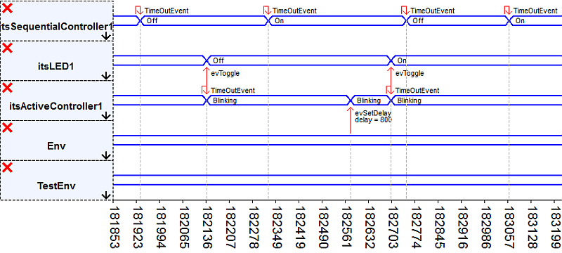
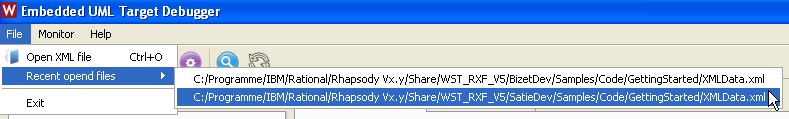

Full Table of Contents - Willert Software Tools Documentation
Willert Software Tools RXF - Introduction
Embedded UML RXF
Embedded UML RXF™ (Real-time eXecution Framework) from Willert Software Tools is the interface between a UML model and the target platform. It facilitates the use of UML in connection with code generation for even small target platforms.Product Rpy_CPP_KeilRTX_Keil5_ARM_MCB1700_TD_V6.00
For a seamless integration of the Embedded UML RXF™ in your specific hardware and development tools environment, this product was prepared to support the following components:== Product Rpy_CPP_KeilRTX_Keil5_ARM_MCB1700_TD == RXF ............... : Willert RXF IDE ............... : Keil uVision 5 Debugger .......... : Keil uVision Modelling ......... : IBM Rational Rhapsody Language .......... : C++ RTOS .............. : Keil RTX (RL-ARM) CompilerAndTarget . : Keil MDK-ARM for Cortex-M3 Board ............. : Keil MCB1700 Extension ......... : Embedded UML Target Debugger
Using These Help Files
All major pages of the help contents are available via the navigation table-of-contents displayed on the left side of each page. Under the "General" section you can also open an extended "Table of Contents" or an "Alphabetical Index" containing keywords used inside the help pages and the available links to the matching help sections. If you experience problems with the left side navigation table-of-contents, please make sure JavaScript is enabled and allowed for these help files in your browser.How to Get Started
It is recommended to get familiar with the installation of your product by reading the "Usage" section of the help. At least you should take the time to read the "Installation" section and then go through the "Getting Started" tutorial.Product Restrictions
The Embedded UML RXF is adapted to seamlessly integrate into the development environment toolchain. This requires several interfaces which may result in restrictions which are not caused by the RXF itself, but also the RXF has some restrictions.UML Modelling Restrictions
Almost all UML elements can be used in Rhapsody in combination with the RXF. This includes classes, objects, singleton objects, files,
statecharts, several kinds of relations etc. However, some UML elements
can not be used together with C code generation:
- Activity Diagrams associated to Operations
Code generation is only supported for activity diagrams and statecharts which are associated with a class, an object or a file. Activity diagrams can also be assigned to operations, but no C code can be generated from them. - Ports
The usable ports are restricted to simple behavioural ports. Through these ports it is possible to send events from one object to another without a tight coupling meeting defined interfaces.
It is not recommended to send events through ports from an interrupt service routine, as memory will be dynamically allocated in that case.
Rapid Ports are supported, multicast ports are not supported and switched of by the framework. Port multiplicity is supported.
- Animation
The RXF does not support communication via TCP/IP due to the heavy overhead. As a consequence there is no support for Rhapsody's internal feature called "Animation". But a good alternative is to use our animation feature which allows debugging of real time applications: The Embedded UML Target Debugger. - Inheritance
To allow inheritance in the C language, all operations would need to be implemented as callbacks or in a virtual function table. This would increase the code size, RAM needs, runtime and calling operations from user code would be more complicated. Thus no inheritance is available in Rhapsody in C.
Embedded UML Target Debugger Restrictions
-
Roundtripping
The current implementation of the WSTMonitor causes restrictions regarding code roundtripping. It is planned to solve this issue in the near future. The WSTMonitor is required to communicate with the Embedded UML Target Debugger. Keil UVSOCK Communication from PC to Target
Currently the Target Debugger monitor part (C++ code on target) has problems to receive commands via Keil UVSOCK. When used in C++ code, the Keil UVSOCK interface seems to skip some bytes during data reception. As a workaround all communication from Target Debugger (host) to C++ Monitor (target) is deactivated. Several Target Debugger features (e.g. query attributes, query states, suspend, set filters and breakpoints) are currently not available in the C++ evaluation version. We are in contact with Keil and trying to solve this problem with the Keil UVSOCK communication interface.
Embedded UML Target Debugger - Introduction
The Embedded UML Target Debugger is a product developed by Willert Software Tools GmbH. It allows you to analyse the software behavior on target. This is similar to a conventional high level language debugger, but on UML level. This includes:
- live animation of sequence diagrams to trace the event order and state changes on target.
- live animation of embedded timing diagrams showing the events and state changes on a tick timer granularity timeline.
- see which instances of your objects which have a statechart have been created and destroyed.
- navigate through a model element tree to show attributes or the current state of a statechart for any instance.
- display the current values of the highwatermarks.
- inject events from the host-side and track the reaction of the target (currently there are limitations for events with arguments).
- see timeout events which have elapsed on target in the diagrams.
- monitor the elapsed time-ticks between two events.
It consists of a Windows application which let you control the debugging and see the feedback from target and a monitor solution which is part of the executable on target.
The Embedded UML Target Debugger has been designed with a minimal overhead in footprint and disturbance of the behavior of your model in mind. Therefore, most of the work is done at runtime on your PC and as little as possible on your target. On the PC, you can view an animated sequence diagram of your target live. The target only sends very short messages when objects are created, destroyed or events are being send. It also can react to commands from the host. The messages and commands never contain symbolic data, but only memory addresses or identification codes to keep the data size small. This requires:
- Information used at startup of the Embedded UML Target Debugger on your PC. This information is stored in an XML file called xmlData.xml. This file is created using a simplifier helper during Rhapsody's code generation
- Information send from the target, like which
object has been created or destroyed, which event is send etc. For
sending information and receiving commands from the Embedded UML
Target Debugger on the PC, we need some interface. This can be a serial
interface but also CAN, JTAG or whatever I/O interface can be used. For
this example, we are working with a serial interface. But other
interfaces are available and you are free to implement whatever I/O you
like. A sample DLL interface for the host side is bundled with the
Embedded UML Target Debugger
The Embedded UML Target Debugger is part of your product.
Product Usage
In this section, you will find information on how to use your product Rpy_CPP_KeilRTX_Keil5_ARM_MCB1700_TD. This covers:- How your product is being installed and what the installed directory structure looks like.
- How you can uninstall Willert products.
- A getting started tutorial which should be the first steps to go through after the product has been installed to verify the correct co-working of all installed tools.
- Additional information about the advanced usage of your product.
Installation
The installation of an RXF by Willert Software Tools requires you to already have installed:- Your modelling tool IBM Rational Rhapsody
- The RTOS Keil RTX (RL-ARM)
- The compiler toolchain Keil MDK-ARM for Cortex-M3 including IDE.
To install a product just launch Setup.exe and follow the steps which are displayed.
Possible Problems During Setup
If you experience any problems, please first check the following possible solutions:- Make sure you have the necessary read/write access privileges in the destination directory or directories.
- Make sure you have enough disk space available.
- Only Windows 7 and Windows 10 are supported operating systems.
- Sometimes direct installation from or to a network drive, long source
path names and in rare cases directly from a DVD may cause problems. If
setup failed you may retry it after copying all files from the
installation folder (including "WILLERT" folder) onto a directory on
your local drive (e.g. "C:\Temp\WillertSetup\") and launching Setup.exe from there.
- Setup will write an installation log file with helpful
information for our support team into the destination folder. It will
be named WST_Install_Log_<date>_<time>.txt.
If Setup can not access the specified destination path to write the log
file, it will show this error message and try to write it to drive C:
in the root directory:

- The "WILLERT" folder beside Setup.exe contains all the files that will be copied to your installation directory. But it will perform several operations on them during installation like macro expansions, conditional operations, path replacements etc. So please don't copy any files from the WILLERT folder contents to your destination directory manually, always use Setup.exe.
Contents of an Installation Directory
There are some files and a folder located beside Setup.exe. This section briefly describes what they are. |
1. Folder containing files required by the Setup. Please never copy contents manually. 2. Autorun information, useful if the Setup is located on a DVD 3. License information, will also be displayed during Setup 4. Readme, specific for your product, will also be displayed during Setup 5. An entry point to the HTML RXF Documentation 6. The actual Setup that has the be executed 7. Configuration and command file in a proprietary format for Setup.exe |
Multi-User Setup with Windows 7
When installing the RXF in Windows 7 the default paths for the Willert
folder is located under the user's homepath. It is recommended if a single user
should work on one PC with the RXF and makes sure read/write access to
that directory is no problem. But if multiple users on one machine
should work with the RXF, it is recommended to install the RXF and also
other toolchains (like IBM Rational Rhapsody and
Keil MDK-ARM for Cortex-M3) directly in a dedicated
directory on the hard disk's root. For exaple C:\Willert\ or
C:\Dev\Willert. This makes sure these folders are accessible for all
users on most setups.Getting Started
Example - Part 1
This
page will guide you through the first steps of using your product
Rpy_CPP_KeilRTX_Keil5_ARM_MCB1700_TD_V6.00. The goal is to generate source code from an
included sample UML project with Rhapsody
Generating Code from the Rhapsody Model
Open the Rhapsody project Blinky from the directory C:\Program Files\Willert\Rpy_CPP_KeilRTX_Keil5_ARM_MCB1700_TD_V6.00\Samples\Model\BlinkyMultitasking:
The component TargetComponent is using the stereotype RXFComponent which is defined in the profile Rpy_CPP_KeilRTX_Keil5_ARM_MCB1700_TD_Profile. Each RXF by Willert Software Tools comes with its own profile with the stereotype RXFComponent. RXFComponent sets the proper environment, some properties for the RXF and defines some Tags. The other profile referenced, WSTProfile, is used to set Rhapsody GUI details which makes it easier for you to view and maintain your models.
ExamplePkg contains the following classes:
- LED which has an Init(), on() and off() operation and a statechart to react to events.
- SequentialController has a simple statechart which toggles the states on and off in an instance of LED every 300 ms.
- ActiveController has a simple statechart which toggles the states on and off in another instance of LED every 400 ms.
- TestBuilder is a structured class which will instantiate the objects and link them (see it's RunTime structure diagram).
You can now press the button "Generate/Make/Run" in Rhapsody (or use Generate/Make/Run entry from Code menu) to perform these steps:
- Generate source files.
- Rhapsody will show several generated .c and .h files along with a .mak file in the Log tab.
- A successful code generation will end with the log entries "Code Generation Done" and "0 Error(s), 0 Warning(s),
0 Message(s)".
- The build step in Rhapsody will actually generate configuration
files, the building of the executable will be performed inside
Keil uVision 5. Those configuration files are mainly:
- RhapsodyMake.bat to launch the WSTDeployer later on.
- RxfDimensions.h
which is an include file which contains constants which are derived
from properties set in the model like buffer sizes etc.
These all deal with dimensions for the RXF, and because these are inserted in an include file you do not need to set these constants in your IDE later. - RxfConstants.h which sets constants with respect to the version of the RXF and its configuration. Samples are WST_DEBUG_BUILDSET or WST_RXF_V6.
- WSTMemoryTypes.h which is used for Memory Section Management so you can locate code and data exact where you like it.
- "Run" starts the WSTDeployer to bring all generated files into
your IDE.
| Note | Each Rhapsody model must have a reference to the profile Rpy_CPP_KeilRTX_Keil5_ARM_MCB1700_TD_Profile and use
the stereotype RXFComponent. This will allow you to use the Deployer and make the right environment settings available. Rpy_CPP_KeilRTX_Keil5_ARM_MCB1700_TD_Profile.sbs is installed in "@WILLERT_1@\ @WST_RELEASE_NAME@\Config\UserSettings\ @WST_PRODUCT_NAME@_Profile_rpy". |
WSTDeployer
The WSTDeployer will deploy Rhapsody generated source files and some generated configuration files into your IDE.It will ask you to specify the location of the Keil uVision 5 project to deploy to when it is called for the first time:
Make sure to select the empty GettingStarted Keil uVision 5-project file which is delivered with your product for the first use. It can be found in this directory: C:\Program Files\Willert\Rpy_CPP_KeilRTX_Keil5_ARM_MCB1700_TD_V6.00\Samples\Code\GettingStarted.
After you saved the path to GettingStarted, the files are deployed to the Keil uVision 5 project:
Sometimes on small models and fast machines you just see this dialog flicker very quickly and then already disappear again, as deployment is a quick operation when there's only little model content.
 Continue Reading Part 2 of this Getting Started Tutorial
Continue Reading Part 2 of this Getting Started TutorialGetting Started
Example - Part 2
This
page will guide you through the necessary steps to build your generated
source files inside your compiler/linker toolchain
Keil MDK-ARM for Cortex-M3.Please make sure you have followed the steps of the Getting Started Example Part 1 before continuing on this page.
Building Target Executable using Keil MDK-ARM for Cortex-M3
Now open the GettingStarted project in Keil uVision 5. Again, the GettingStarted project along with the deployed files can be found in this directory: C:\Program Files\Willert\Rpy_CPP_KeilRTX_Keil5_ARM_MCB1700_TD_V6.00\Samples\Code\GettingStarted.You may need to configure the debug settings to your needs and hardware. Please check debugging settings carefully (depending on Simulator Software or Debugger Hardware).
Building the Target Executable
Now we can build the application and test it as usual with the Keil MDK-ARM for Cortex-M3 Environment. Select to build your GettingStarted project and verify the build was successful.Debugging on Hardware
You can set up the debug configuration according to your needs.
After downloading / flashing to target and entering debugging mode, you can debug the software on C level as usual.
While the project is running on target, you will see two LEDs blinking in individual timings (running in separate tasks) on the evaluation board.
If you have reached this point, you have now successfully verified the correct working of your installation!
Embedded UML Target Debugger - Usage Example
The Embedded UML Target Debugger is a product developed by Willert Software Tools GmbH. It allows you to analyse the software behavior on target. This is similar to a conventional high level language debugger, but on UML level. This page will guide you through the first steps how to use the Embedded UML Target Debugger.
To be able to work with the Embedded UML Target Debugger and view the target animation, please first go through the GettingStarted example.Basic Functionality - Getting Started with the Embedded UML Target Debugger
For the first steps with our Embedded UML Target Debugger, it is recommended to use our example model instead of your own model. This example will be based on IBM Rational Rhapsody as UML Tool. However the steps and Target Debugger functionality when working with another UML tool are very similar. We will use Blinky.rpy, which is a good starting point.Also the EA Blinky sample model can be used.
| Please Note: | For
Enterprise Architect Users the Embedded UML Target Debugger initially
look like nothing is happening. After making sure the correct target
connection has been selected and the right XMLData.xml file is opened,
the only message received from the target is usually something like
"Monitor Version is : X.X.X". This is because the Blinky Sample Model
for EA just uses timeout-events and synchronous function calls instead
of events as messages. However you can easily make the timeout-events
visible in the Target Debugger by switching to the "Filters" tab on the
left side and check the checkbox to enable timeout-events. |
In your Rhapsody Model make sure to have the LiveAnimation stereotype selected in addition to the RXFComponent stereotype for your active component.
If you are using Enterprise Architect you need to make sure the Animation Tag is set to "true" for your configuration (this should be the default).
Make sure you have an empty GettingStarted IDE project you can deploy to. You can now perform a Generate/Make/Run in Rhapsody, which will deploy the files to your IDE, and build the GettingStarted example. After a successful build in your IDE, flash the executable to the target but do not start program execution yet. The target program must be reset and stopped. Otherwise the Embedded UML Target Debugger will miss important information about dynamically created objects the target sends.
Now start the Embedded UML Target Debugger on the PC. You can use the shortcut in the Windows Start menu to start the UML Target Debugger. It which launch the batch file located under <Willert folder>\<your product>\Tools\TargetDebugger\Embedded_Uml_Target_Debugger.bat:
The Embedded UML Target Debugger first need to read the XML file which has been generated using a simplifier helper during Rhapsody's code generation This file is called XMLData.xml and located in the directory where Rhapsody generates the code. You can open the XML file using File | Open XML File or via button on the toolbar:

After the XMLData.xml file was opened, you have to select the target communication plugin you want to use from the drop down list. In the next step you can select the communication parameters depending on the communication interface. This example works with a serial communication.
In retrospect it is always possible to change the communication plugin and settings by using the toolbar buttons:
| Please Note: | When working with Keil µVision, you can use the UVSOCK plugin which communicates with the target via JTAG: Please activate it in Keil µVison's configuration dialog and configure the same port number in µVision and the Embedded UML Target Debugger communication interface settings (your port number may be different): |
The Embedded UML Target Debugger also allows you to add your own I/O interface implementation.
Now it's time to shortly switch back to your IDE and start program execution on target, as the Embedded UML Target Debugger now listens for commands sent from target. In the tree view on the left you can now also see values of attributes, states and highwatermarks.
You will see something like this:
Advanced Features
The Console window shows information on events: which object sends what event to which destination object.You can also click on an attribute: at that moment in runtime, the Embedded UML Target Debugger on the PC will query the target to send the actual value - such information is sent only on request by the PC in order to reduce the I/O traffic as much as possible. The information shown on events is actually transferred in a compact way and not as the strings you see, again to reduce traffic and thus runtime disturbance.
Timing Diagrams
The Embedded UML Target Debugger is able to switch from the default sequence diagram view to a timing diagram view. It is a useful diagram similar to the timing diagrams known from technical data sheets to visualize state changes proportional to the time axis.Zooming in and out is possible using the mouse wheel, if available. You can also use the buttons of the zoom control panel:

It allows to enter the number of ticks to be displayed in the window, zoom in and out and to specify a zoomed-in visible area by selecting the "zoom box" tool and clicking twice into the diagram to specify the timeframe to be shown / zoomed in. The auto refresh checkbox controls, if the diagram should automatically scroll to the very right of the diagram if new events have been received.
Event Injection
Its also possible to inject events by the Embedded UML Target Debugger. This requires a right-click on the object to which the event will be sent. In the appearing context menu any event can be selected. So its possible to check out the reaction of the target, when the event is received by the object.
Events may also have standard type parameters, which are supported by the Embedded UML Target Debugger. Parameters / arguments of events will be displayed as integer values inside the animated diagrams. Also event injection with arguments is possible. If you have selected to inject an event which has parameters (defined in the UML model), a window will pop up and ask for each argument. Currently only integer values are supported.
This is a sample procedure of modifying an attribute via an event which has a parameter:
Refreshing queried attribute values works by closing and opening the attribute display.
This sample vied in the timing diagram looks like this:

Filtering
On a larger model, showing all events and attributes is confusing, because it will not fit in a window and will lead to overhead. Therefore we have implemented a filter which can show information for 8 objects as maximum. Please select the Filter tab and enable a filter for the itsProxy1 object (Proxy's first instance). Afterwards the button on the toolbar to enable filter has to be pressed.| Please Note: | Filtering is disabled and will not work if the define WST_MONITOR_MINIMIZED is set. Also manual state queries are disabled in that case. |
Now you can only see the events being sent by itsProxy. In the screenshot you see the first events are also coming from itsActivator1, but after the fifth event the filters have been enabled and only events from itsProxy1 are displayed.
You can always change which classes or instances should be animated, by checking and unchecking them in the tree view of your model in the Filters tab.To apply the changes, it is necessary to press the update filters button.
The animation of timeout events is also controlled in the filters tab, but can be checked independent of the activated or deactivated filtering mechanism.
Serial Communication Buffer Overflows
Interrupt based serial communication, e.g. available for the ARM Cortex M3 Keil environment, relies on send and receive buffers. When compiling the monitor sources, the buffer sizes and overflow behavior can be set via defines:- If WST_MONITORIO_WAIT is defined in the file WST_Product.h, the monitor will wait until it can send data again, when the transmit buffer is full. This way no event will get lost, but the real-time behavior is being influenced on a full buffer.
- If
WST_MONITORIO_WAIT is not defined, events will get lost if the buffer
is full. In this case the buffer will be overwritten by new events. The
real-time behavior is not affected. In addition, the debugger is
informed that events may have been lost. This information is displayed
in the error window of the debugger.
Logging Server
The Embedded UML Target Debugger has very open interfaces, also for the Data which is being displayed. A built-in TCP/IP server can make information about all received events and created or destroyed instances available. This information is transformed by the Embedded UML Target Debugger into string messages. Every message begins with a type identifier and is send out as a block of bytes ending with a new line ('\n').There are four message types implemented. Their type identifiers are::
- EVENT
- INIT
- DEST
- TIMEOUT
The content parts of the message string are divided by a semicolon (';').
All instance names are trailed by the depending class name divided with a colon (':').
The following different message packages are supported:
An Event occurred:
EVENT;<event name>;<source instance name>:<source class name>;<destination instance name>:< destination class name>;<elapsed ticks>;<current state name>\n
A Timeout Event occurred:
TIMEOUT;<source instance name>:<source class name>;<elapsed ticks>;<current state name>\n
A new instance is created:
INIT;<instance name>:<class name>\n
An instance is destroyed:
DEST;<instance name>:<class name>\n
The logging server is running in the background of the Embedded UML Target Debugger as a TCP server at the port 1234. There is no possibility to communicate via this server with the Embedded UML Target Debugger. The logging server only has the functionality to send out information when something has happened on the target. Messages sent to the server will be ignored. To check if the server has started correctly and the client is connected correctly to the server the two following lines must appear in the console tab of the target debugger:
Test Server
A test server with an open interface is part of the Embedded UML Target Debugger. It can be used to inject events into the running target to influence the behaviour of the target system. The injected event is handled like a normal event. For injecting an event, the Target Debugger's monitor is needed on the target side as part of the Willert RXF framework. This additional software needs very little resources (e.g. runtime depending on the used interface between host and target) to execute the incoming data from the host to inject the event into the framework.The built-in test server is reachable via TCP/IP on port 5050.
Following information are needed about the event:
- Instance name of the Source
- Instance name of the Destination
- Event name
- Event parameter
To inject an Event the information must be send to the test server as a string. This string has the following format:
<destination instance name> <event name> <source instance name> [<Parameter>]\n
The event parameter is actually implemented only as an int value and only necessary if the injected event needs a parameter. If the injected event needs a parameter and the transmitted string contains no parameter the injected parameter for the event is autoset to 0 (zero). All parameters must be divided with a space character (' '). It is also possible to inject more than one event at a time. The injected string must be extended with a second string of the same format. These two strings must be divided with two semicolons (';;') from each other, for example:
<destination instance name> <event name> <source instance name> [<Parameter>];;<destination instance name> <event name> <source instance name> [<Parameter>]\n
It is also possible to receive events with the test server:
“<event> <source> <destination> <elapsed ticks> <current state> [parameter];;”
Every string is ended with two semicolons “;;”.
User defined Types
The Embedded UML Target Debugger generally only supports displaying attributes, event arguments etc. interpreted as integer types. But attributes defined inside the UML model might also have different types like e.g. user defined enumerations. In order to handle these attributes and other attributes of the same class which follow behind user defined attributes in the struct, the Target Debugger needs to know their size in Bytes. The sizes are specified inside a <TypeList> in XMLData.xml, but this file gets overwritten with each building in the IDE. However it is supported to store an XML-snippet file called "UserTypes.xms" in the IDE project directory and specify user defined type sizes in this file to include those types in every XMLData.xml generation and allow the Embedded UML Target Debugger to visualize it and other attributes correctly. The values of user defined types will also only be shown as integer values, like usually 0 for the first literal of an enumeration, 1 for the second and so on.Example enumeration type in the UML model:
Contents of user supplied XML-snippet file called "UserTypes.xms" in the IDE project directory:
<Type size="4">SequentialController_status_t</Type>
<Type size="2">AnotherUserTypeSample_t</Type>
Visualization of enumeration literal "active"" inside the Embedded UML Target Debugger:
More Information
To make it easier to navigate to your recent used XML files, you can select them in the file menu:
If you experience strange problems with the Embedded UML Target debugger, this could be caused by a non matching monitor version on target. To make it easily possible to detect such problems, the error log tab "Problems" will show Version conflicts in that case.
FAQ
If you have any questions, please have a look at the Animation FAQ page or contact our support team.Custom Interfaces for Target Communication
The user can create custom communication interface DLLs for the Embedded UML Target debugger.Communication Plugin
Embedded UML Target Debugger Communication Interface.
The Embedded UML Target Debugger needs to communicate with the target. This part is already implemented for a serial interface as an example. More ready to use interfaces might be available, you should contact Willert Software Tools for a list of currently available plugins. But it's also possible to implement a custom interface on your target and for Qt. You need to implement functions to initialize, read and write on you communication port. You need also to know how Qt works and more precisely the signal and slot concept.
To implement the plugin, it's recommend to use QtCreator IDE to develop it. You can download it for free at http://qt.nokia.com/downloads
There is a template class available named "MyCommunicationPlugIn". You can rename this class for your convenience but you need to rename also the name in the Qt project file (.pro). You can see that this class implements Communication, a class interface that allow the Embedded UML Target Debugger to know which class can be called. You can not modify this class interface. Moreover you need to define those classes of the Communication interface.
On MyCommunicationPlugin class, there are multiple functions:
- void initCom(): it needs to be implemented to initialize your communication plug in. You need to emit a signal to the Embedded UML Target Debugger to signal that the communication is ready. This should be done using communicationEstablished().
- char* read() : inside this function, you need to insert a thread or event driven (preferable) functionality to read all available bytes from your communication port from the target. This function must write the number of bytes (numBytes) and the data (readBuffer). At the end you need to send the readBuffer and the number of bytes to the Embedded UML Target debugger via a signal (emit newCommand( readBuffer, numBytes )).
- void write(char[] , int length) : this function is directly called from the Embedded UML Target Debugger and allow to write the data inside the table with the length of the table as second argument. This data must be send to the target via your communication interface.
- bool initialization(bool config) : this function is directly called from the Embedded UML Target Debugger and initializes the config dialog box and the link between the dialog box view and MyCommunicationPlugin data model. In this function you can change the name and the list of parameter in .cpp and .h. You can also modify the slot function parameter to your own needs here. If you want to design the config dialog box you need to open the configdialog.ui file with QtCreator. If you click on the combo box, you can change on the right bottom hand side the object name, that you will call in the MyCommunication plugin with myDialogBox->getUi()->parameter1Box. So for each object, you want to edit in the CommunicationPlugin from configDiaolog.ui, you just need to check the objectName and call myDialogBox->getUi()-> < yourObjectName > . Moreover, it's possible to add other boxes but you just need to connect them with the communication plugin like in the communicationPlugIn.cpp and add a slot function that calls it when the user changes it.
- void close() : Needs to be implemented to close MyCommunicationPlugIn..
Animation FAQ
This page is supposed to answer questions related to the Embedded UML Target Debugger and animation generally.- Why do I not see any animation - there is no error shown.
- The application on the PC shows "Can not find COMx" on the error tab.
- The communication between the Target Debugger and Keil µVision does not work.
Why do I not see any animation - there is no error shown.
There are two obvious reasons for this:- Did you use the stereotype LiveAnimation from your product's profile in your Component in Rhapsody?
- Did you open the XML file in the animation program on the PC and is there no error message?
- Did the generate / make / run in Rhapsody show any problems? Usually you should see something like this at the end:
- Also in your IDE you usually see some kind of message about the creation of the XML file. There should not be error messages.
Can not find COMx
You can use the communication setup dialog to configure the COM port which should be used. You can also check your Windows system settings and configure the number to be used for your serial port.
Go to your Hardware system settings:
 |
|
 |
|
 |
|
(depending on your other hardware configuration you might even ignore the message that a desired COM port is already being used) |
|
|
|
Exit and re-launch the Embedded UML Target Debugger on your PC and reopen the XML file, so it will re-initialize the serial interface:

Communication between the Target Debugger and Keil µVision
The Embedder UML Target Debugger can communicated with Keil µVision via the "UVSOCK" TCP/IP interface. Please activate it and configure the same port number in Keil µVision and the Embedded UML Target Debugger communication interface settings:Buildsets (Debug / Release)
It is very likely that you want to distinguish between optimized production code, and code you want to debug. For this, your product supports two buildsets, as defined in the property C_CG::Rpy_CPP_KeilRTX_Keil5_ARM_MCB1700_TD_V6_00::BuildCommandSet.The main difference is the defines which will be generated into RxfConstants.h.
The Debug Buildset will define _DEBUG and HIGHWATERMARKS per default, while Release will define NDEBUG. This is because the Rhapsody generated makefile will use one of the properties CPPCompileDebug or CPPCompileRelease inside the CPPCompileSwitches property.
These resulting CppCompileSwitches should include -D<macro definition> options only. The reason for this, is that you build your application in your IDE. That is where you specify for example include paths and other options. The options or macros set via the property CppCompileSwitches result in #defines in a generated RxfConstants.h when you select Code | Build or Code | Rebuild in Rhapsody.
| NOTE | If you are creating a library from the RXF sources which gets used inside your application, the options or constants set via property CppCompileSwitches must match the options in your Keil uVision 5 project to create RXF libraries. You should not compile the RXF libraries with for example support for UML ports, or use highwatermarks in a debug version, and use different options to compile your application with. |
WSTDeployer
- Deploying Files to the IDE Environment
Willert Software Tools RXF products come with the tool WSTDeployer
which is used to integrate generated files and the RXF into an existing
build environment, typically the IDE. The usual approach is the
following:- Code is being generated by IBM Rational Rhapsody.
- If the WSTDeployer is started for the first time for an environment it will display a configuration dialog where the destination Keil uVision 5 project needs to be specified.
- The WSTDeployer copies the generated files to the destination folder where the IDE project is located.
- The WSTDeployer copies required RXF files to the destination folder.
- For some IDEs the WSTDeployer also modifies the project by adding the deployed files automatically, see table below.
Advantages of Building Sources Inside the IDE
Instead of building your application within IBM Rational Rhapsody or just via makefile, your application is build inside Keil uVision 5 where all knowhow is available on target derivates, memory maps and even boards, simulator-, debugger- and emulator specifics. Your IDE may come with a Wizard and your tool manufacturer will have provided extensive documentation on how and where to tweak settings in the IDE to accomplish some setting.In order to build your application in Keil uVision 5, the IBM Rational Rhapsody generated sources must be available inside an IDE project. You can either use a product or an adaptation which supports a Deployer to copy all generated files to an IDE project and also update the IDE project file so all your sources will show up in the IDE or integrate files in the IDE project manually. To prevent you from having to specify various constants which are used in the RXF, the code generation process will generate a few include files - one for configuring the size of queues for example, and another include file for defining constants used in the RXF (for details see here). What you must do yourselves is specify include paths and of course as usual, make sure the correct startup files, device configuration files and settings are part of the IDE project.
The Deployer is a separate application which is launched when you select Run in Rhapsody. You will use:
- Code | Generate or Code | Regenerate to generate your application sources
- Code | Build or Code | Rebuild to generate the necessary include files (with defined constants)
- Code | Run to launch the Deployer
Please Note: The WSTDeployer needs to access the Rhapsody API to get model specific information. Rhapsody only allows API connections to the Rhapsody instance which was first started. This means only one running Rhapsody application at a time is recommended when working with the WSTDeployer. After a crash or Rhapsody, please make sure no orphaned instance is still listed in the system's task manager.
Deployment Configuration
The WSTDeployer does not save the location of the IDE project to deploy to inside the IBM Rational Rhapsody model, but stores this information in the local registry to allow different users working on a model to have different IDE locations. The Keil uVision 5 project file location is configured when the WSTDeployer is running in configuration mode. This is the case if no destination project for the current environment has been configured yet or if the Deployer configuration is opened manually. This is possible via a Tools menu entry in Rhapsody.
In the configuration dialog please use the "..." button to browse to your IDE project, for the first steps this is usually the GettingStarted project which can be found in "@WILLERT_1@\@WST_RELEASE_NAME@\Samples\Code\GettingStarted" on your machine. You need to select the ".uvprojx" file.
If the checkbox "RXF Library is used" is checked, you need to build a library from the RXF sources and make sure that library is included in the IDE project manually. It will make sure the WSTDeployer does not add RXF files except a few dimensioning files which should not be part of the RXF library, but should be part of the IDE destination project. These dimensioning files are WST_CFG.c, WST_MEM.c, WSTTarget.c and possibly additional product specific ones.
Please note: WST_TMM_Init uses a modelling tool generated #define for the maximum timeouts. Changing this value in the modelling tool requires a recompilation of the RXF library.
The place where environment specific configurations are saved by the WSTDeployer is the windows registry under this path:
Software\JavaSoft\Prefs\de\willert\deployer\
Rpy_CPP_KeilRTX_Keil5_ARM_MCB1700_TD_V6.00\
<current model name>\<current component name>\<current configuration name>".
Actually for technical reasons the model, component and configuration names are not exactly known when calling the WSTDeployer, so they are extracted from the generated sources directory (via setSourceDir) which it expects in the following format to extract the information correctly from the path: "...\<model name>\<active component>\<active configuration>". In Rhapsody this would be the default, but the configuration's path can be changed to a user defined one. This is no problem and still the WSTDeployer will work well, it will use just the deepest three directory levels of the generated source directory as its key for the registry.
Features of the WSTDeployer for Keil uVision 5
Some IDE adaptations for the WSTDeployer support additional features:| Feature |
Support for Keil uVision 5 |
| Copying files from code
generation directory to IDE project destination |
supported |
| Adding new files automatically
to the Keil uVision 5 project |
supported |
| Removing deleted or renamed files automatically from the Keil uVision 5 project | supported |
| Reflect package and subpackage structure from the model as groups inside the Keil uVision 5 project | supported |
| Default Group name(s) used to
add RXF and generated model files to |
"RXF" and "GeneratedModel" |
| How the IDE project is updated |
IDE will automatically ask to reload project after changes to project files |
Please Note: Features listed as not supported for Keil uVision 5 in this table may limit the actual functionality described below.
Deployment Log File
In the WSTDeployer directory ("@WILLERT_1@\@WST_RELEASE_NAME@\Tools\WSTDeployer") a log file WSTDeployerLog.txt will be created and each run of the deployer appends information, warnings and errors about the deployment. If the WSTDeployer is started with the debug command as first argument, also debugging information is written to the log file.The log file WSTDeployerLog.txt is limited to a size of 512kB. If the size is exceeded, the file will be renamed to a backup log file named WSTDeployerLog.txt.1 and a new WSTDeployerLog.txt will be started. If an older WSTDeployerLog.txt.1 already existed, it will be truncated. This makes sure the log files never consume more than 1MB of hard disk space.
Setting up a Project Specific WSTDeployerExcludedFiles.txt
The WSTDeployer can also use individual settings, which files to deploy, for a specific IDE project. This is helpful, if an environment specific file, e.g. WSTTarget.c should not be copied from the product's Sources directory, but will be generated from the model or is included manually in the IDE project.To override the general exception lists WSTDeployerExcludedFilesLib.txt and WSTDeployerExcludedFilesNoLib.txt (in the directory "@WILLERT_1@\@WST_RELEASE_NAME@\Tools\WSTDeployer"), you need to place a file WSTDeployerExcludedFiles.txt in a project specific directory. There are two possibilities:
- Place WSTDeployerExcludedFiles.txt in your IDE project directory. This is the directory also containing the IDE project you specify in the WSTDeployer configuration dialog.
- Place WSTDeployerExcludedFiles.txt
in your generated sources directory.
This is typically under the component's directory: <path of your Rhapsody model>\<component name>\<configuration name>
- The individual deployment exception list must not contain the postfix Lib or NoLib in the filename, it is just named WSTDeployerExcludedFiles.txt.
- The IDE project or configuration specific exception lists WSTDeployerExcludedFiles.txt are not merged by the WSTDeployer with the general product one and no default lists get added dependent on the RXF Library is used Checkbox. They just override all other lists.
Using the WSTDeployer to Copy Additional Files
Similar to the WSTDeployerExcludedFiles.txt mechanism, the WSTDeployer can also use individual settings to specify additional files which are not generate by IBM Rational Rhapsody but should be copied and included in the Keil uVision 5 project. This mechanism is meant to include e.g. legacy code in the deployment process. It is not meant to include external libraries in the IDE project, this should be done directly in Keil uVision 5.A general (and usually empty) additional deployment file list is located in "@WILLERT_1@\@WST_RELEASE_NAME@\Tools\WSTDeployer" and called WSTDeployerAdditionalFiles.txt. This file can be edited to specify RXF product wide additional files or you need to place a WSTDeployerAdditionalFiles.txt file in a project specific directory. Again, there are two possibilities:
- Place WSTDeployerAdditionalFiles.txt in your IDE project directory. This is the directory also containing the IDE project you specify in the WSTDeployer configuration dialog.
- Place WSTDeployerAdditionalFiles.txt
in your generated sources directory.
This is typically under the component's directory: <path of your Rhapsody model>\<component name>\<configuration name>
- The IDE project or configuration specific additional file list WSTDeployerAdditionalFiles.txt is not merged by the WSTDeployer with the general product one.
Removing
Files from the IDE Project after Renaming or Deleting Model Elements
The Deployer may support removing files from the IDE project
(Keil uVision 5: supported).
IBM Rational Rhapsody will remove redundant source files which
have been deleted or renamed in the model or which are not inside the
active component's scope anymore. When these files are deleted from
file system in the generated sources folder and have already been
deployed to the IDE earlier, those files will automatically be removed
from your deploy destination folder. Depending on the features of your
WSTDeployer IDE adaptation, it can also remove those files
automatically inside the Keil uVision 5 project. You can also
deactivate this feature in the WSTDeployer.properties
file by changing
PrjRemoveRedundantSourceFiles to false.Please Note: In Rhapsody the user has to manually trigger the deletion of generated files by the Rhapsody code generator. This is done in the "Code" menu via "Clean Redundant Source Files"
You can set the Deployer to deploy files to the same directory as IBM Rational Rhapsody generates them. That way the deployer will not perform the copy operations but keep the files in Keil uVision 5 up to date. You need to use this way of working with the Deployer to be able to use Rhapsody's roundtripping mechanisms.
WSTDeployer may use files called CurrentFileList.txt and PreviousFileList.txt inside the generated sources directory. Those files are reserved to be used by the WSTDeployer to support removal of redundant source file links from IDE projects.
Working with a Relative Root Path
It is possible to specify the root path of your destination IDE project not just as an absolute path (which is usually done via the "..." browse button), but manually enter a relative path. It is not possible to enter any relative path just like "..\IDE_Project" or "IDE_Project". Instead if a relative path should be used it must begin with a single point-backslash: ".\", so the two examples would need to be entered as ".\..\IDE_Project" and ".\IDE_Project". The path will be relative to the generated sources directory.Backups of Keil uVision 5 Project Files
The WSTDeployer by default creates up to three Backups of the Keil uVision 5project file. The backups will only be created if the last backup is more than one hour old. Backups will be named including the date and time e.g. GettingStarted.uvproj.Backup_2012-08-01_17-45-33. You can also deactivate this feature in the WSTDeployer.properties file by changing PrjAutoBackup to false.
Using WSTDeployer from the Command Line
To enable automated build scripts etc., it may be useful to be able to control the WSTDeployer via the command line.| Supported WSTDeployer Command Line Arguments | |
| configure | show a configuration dialog for your user specific paths |
| debug | generate more detailed log file, must be the first argument |
| deploy | deploy files to the configured destination directories |
| getproject | print the currently configured IDE project to stdout |
| inputFiles() | specify file containing file-list which should be deployed |
| openproject | open currently configured IDE project with associated program |
| setComponent() | set active component name to the specified argument within the brackets |
| setDestProj() | set destination IDE project file to the specified argument |
| setModelDir() | set the model directory to the specified argument |
| setSourceDir() | set the source directory to the specified argument |
| version | display the tool's version string |
| If a "set...()" path contains spaces it has to be quoted, e.g.: setModelDir("C:\Some Folder") | |
Please Note: The order of command line arguments specified the order they are processed. This means it is only useful to specify e.g. setModelDir() before the command line argument configure or deploy.
Automated Builds
The WSTDeployer can be integrated in an automated / nightly build
environment for continuous software integration. The following sample
batch file structure shows how code can be generated from a user
application UML model and deployed into the IDE. This sample is based
on IBM Rational Rhapsody as modeling tool and Keil uVision as IDE.
(Lines starting with "..." should be appended to the previous lines.)| 1) Generate/build model using RhapsodyCL |
@echo on |
| 2) Use the WSTDeployer without need for the RhapsodyAPI to deploy files to the compiler toolchain |
cd /d "<Willert RXF path>\Tools\WSTDeployer" |
| 3) Build IDE project from command line |
"<Keil path>\UV4\Uv4.exe" -r "<path to IDE project file>" |
| Please Note: | Please note this is just a sample configuration and the automated build process may vary massively for different combinations of tools. |
Advanced Configuration using WSTDeployer.properties
Many advanced configuration options are available in the file "@WILLERT_1@\@WST_RELEASE_NAME@\Tools\WSTDeployer\WSTDeployer.properties". You can open that file with any text editor.The WSTDeployer.properties file can not be overridden for a specific model, it is always valid RXF product wide.
| Please Note: |
Paths which are entered in that file need to be entered
with double-backslashes and without quotes, e.g.: SomePropertyKey = C:\\My Directory\\My File.txt |
Each entry in the properties file comes with a short description. This help file only lists a subset of the most relevant properties you might want to change to specific needs.
| Property Name |
Description |
Default Value |
| CfgDialogBrowseStartPath | In the deployment configuration
dialog, this is the path which the browse window starts with. You may
want to set is to your delelopment project's root directory. |
@WILLERT_3@ Rpy_CPP_KeilRTX_Keil5_ARM_MCB1700_TD_V6.00\\ Samples\\Code |
| RxfExcludeByFilenameOnly | Specify if only file names are contained in the RXF exclude specification text file. If set to true, a match of e.g. WSTRTOS.c will exclude RXF\WSTRTOS.c and would also exclude any\other\path\WSTRTOS.c. If set to false, the files need to be named with the relative subdirectoy. | true |
| RxfUseLibAsDefault | String to specify if the
deployment should expect an RXF library in the destination as default.
This will be the default state of the "RXF Library is Used" checkbox if
the Deployer for a new project has not been configured yet. |
false |
| FullPathKeys |
Option to save full generated
code paths in the registry as IDE project key. This can be helpful if
in different projects the last three subdirectories use the same naming. Possible value: true, false |
false |
| PrjRemoveRedundantSourceFiles | Option to delete files in destination directory, which were removed in the generated source directory. | true |
| PrjSortFiles | Option to sort files inside
project groups in alphabetical order. Currently only supported by WSTDeployer for Keil uVision4 IDE. |
true |
| PrjSortGroups | Option to sort groups inside the
project in alphabetical order. Currently only supported by WSTDeployer for Keil uVision4 IDE. |
true |
| PrjPkgSubfoldersAsGroups | Option to deploy package
subfolders into groups. Only supported by some WSTDeployer implementations. |
true |
| PrjRxfSubfoldersAsGroups | Option to deploy subfolders
under the RXF folder into groups. If set to false, the files from RXF
subfolders will be copied to a flat RXF folder without subfolders and
will all files from the subfolders also in the flat RXF directory. Currently only supported by WSTDeployer for Keil uVision4 IDE. |
false |
| PrjAutoBackup | Option to automatically create backups of the toolchain project file. | true |
| Special WSTDeployer Properties to Specify
Destination Subdirectories The WSTDeployer internally knows files of type "0", which are the generated files and type "1" which are the source files of the RXF. The specified subfolders can also be just a dot (.) if files should not be deployed in a subdirectory for that kind of destination. |
||
| Dest0Name | Name for files generated by the modeling tool. This should not be edited! |
Generated Files |
| Dest0Subfolder | Subfolder for files generated by the modeling tool. | GeneratedModel |
| Dest0Label | Displayed text in the configuration dialog for the path to files generated by the modeling tool. | for Model Sources |
| Dest1Name | Name for files generated by the modeling tool. This should not be edited! |
RXF Files |
| Dest1Subfolder | Subfolder for files generated by the modeling tool. | RXF |
| Dest1Label | Displayed text in the configuration dialog for the path to files generated by the modeling tool. | for RXF Files |
Migration from a V5 Product to V6
The RXF is currently available in major version 6. It allows Willert Software Tools to create more customized product releases based on an internally used, highly modular component structure. But also on the customer side migration from a V5 product to V6 involves several changes and improvements.Modeling Tool Support
Until V5 all products have been adapted for the UML tool Rhapsody by
IBM Rational. There were only two V5 releases ("EA_Bizet" and
"EA_ez430") which were manually created for Enterprise Architect by
Sparx Systems. V6 allows to encapsulate modelling tool specifics in a
modelling specific component and makes it possible to support multiple
UML tools with code generators just as we support a wide range of
RTOSes, compilers and targets. Programming Language Support
The support for non-ANSI-C products are been improved. The V6 of the Willert RXF will also be available also for C++ in the near future.RTOS based RXF
The RXF used in combination with an RTOS is now completely switched
over to the RXF which already has been used for a long time together
with the OO-RTX by Willert Software Tools. This gives us a much better
performance in RTOS based products. But the biggest difference is the
footprint. Our V6 Multitasking RXF with Keil RTX reduces the code size
by about 60%!Sample comparison based on the product Rpy_C_KeilRTX_Keil_ARM_MCB1700 versus Strauss, based on a Blinky model:
| V5 with RTOS |
V6 with RTOS |
OO-RTX* |
|
| Code Size (ROM) |
18 kB |
7.7 kB |
4.8 kB |
| Read-Only Data (ROM) |
356 B |
324 B |
284 B |
| kPEPS (1000 Processed Events per Second) |
68** |
103 |
134 |
** Value may be inaccurate, because it was measured with different optimization level and with an older version of the test model.
Note: The values specified here may be different depending on the versions of the RXF and compiler/linker and depend on the configuration and optimization level. The values inside the table were measured with disabled Highwatermarks in release buildset with the highest compiler optimization for time.
This also shows the Willert Multitasking RXF (including the resource needs of the Keil RTX) requires less than the double footprint than the OO-RTX solution.
Product Names
(e.g. Rpy_CPP_KeilRTX_Keil5_ARM_MCB1700_TD_V6.00)
While V5 products have always been names after classical composers like Beethoven, Hã¤el, Strauss or Monteverdi, in V6 we now use product codes which are more technical and not as easy to vocalize. They consist of all important component names (in short form) a product has been built for. This is the big benefit of the new product codes, you can always see what is part of a product and what will be the difference between two installed environments.
Product codes are put together following this scheme:
| Modelling Tool | Programming Language | RTOS | Compiler | Target | Evaluation Board* | Extension** |
* The Evaluation Board component may not be part of a product. It is usually responsible for allowing LEDs to blink in a sample project on the actual board or even to specify which CPU of a CPU family the product can be used with. E.g. for "Keil_ARM" there are preconfigured products available for the ARM7 board "Keil MCB2130" and the ARM Cortex-M3 board "Keil MCB1700".
** Extensions are optional and multiple extensions may be combined in on product. Possible extensions are "TD" for Embedded UML Target Debugger or "Eval" for an evaluation version of the RXF.
Version Numbers
In version 6 releases always have a version number like V6.xx, no minor revision separated by an "r" like in V5 is used anymore. But The new release mechanism now also allows to create custom releases which might have a postfix appended to the version name, e.g. "_beta" for beta versions or "p1" for a patch which has been applied to the latest release.
Installed Files
V5
RXF products were installed completely into the Rhapsody directory
structure (<Rhapsody>\Share\WST_RXF_V5\<RXF release name>).
Now, with our modelling tool independent approach, RXF files are
installed in a "Willert" directory at a location of your choice. On
Windows XP it is no problem to put this folder under "C:\Program
Files". For Windows 7 it is recommended to use a directory inside the
user path, as write permissions to several files under this path are
required. To hook into Rhapsody, only
Rhapsody's Site<language>.prp file is adapted, tool menu entries
might be added and the product's profile is copied to the Rhapsody
Profiles folder.WSTDeployer
The WSTDeployer is now more independent of the modelling tool. In V5 it
used to access tags set inside the component to know e.g. the name of
the IDE project file. The WSTDeployer configuration was then used to
just select the path where the file can be found. V6 does not access
tags inside the model anymore and asks to browse to the IDE project
file instead of its directory.Libraries
Evaluation releases of the RXF do not contain source code of most of the RXF files.
They come with precompiles libraries (usually located under Source\LIB
and named RXFD.<lib> and RXFR.<lib>).All full product versions do not come with a library and most of them are not prepared to be used with the RXF in a library. In V5 the first steps for a user of non-evaluation product were always to build the IDE projects "CreateRXFLibrary" and eventually "CreateAnimationLibrary" for both, Debug and Release, buildsets. This is not necessary anymore, the WSTDeployer option, if a library should be used here, is now disabled by default. Source files of the RXF will be deployed into your IDE project and built along with your generated application code. This has several advantages:
- First steps are easier.
- The problem of an updated compiler without recompiled libraries is gone. If the user first build the RXF libraries, then later updates the compiler and tries to link strange errors, sometimes even during runtime may occur. We experienced such problems via related support requests.
- Defines such as WST_CFG_HIGHWATERMARKS
are now more comfortable, because the libraries do not need to be
recompiled with the defines which have been set in the current UML
model configuration.
Container Classes
UML models may contain relations between classes which are not 1-to-1 relations, but which have a multiplicity. If the multiplicity is a fixed value, the relation can be realized via a simple array by the code generator. But it it is a "1-to-*" or "*-to-*" relation the relation must be managed dynamically via an implementation of container classes. Depending on other settings of the relation, like it it is ordered and it it has a key parameter for accessing it, container classes like a collection, list or map are required.Your product is delivered with the full Rhapsody specific container classes RiCList, RiCMap and RiCCollection. Other V6 products may come with a V6 specific own container class called WST_CON_LST, which is not available in your release.
Sending Events
The RXF V6 allows to send asynchronous messages / events via the macros FIRE, FIRE_ISR and includes macros for easy handling of static event arrays to be used in interrupt service routines. For details please see the asynchronous messages help section.Deinstallation of the Product
You may use the Windows control panel functionality to remove installed software from your machine. Willert products can be removed one by one this way. After all product specific files have been removed by the Willert uninstaller during a guided deinstallation procedure, only the folder C:\Program Files\Willert\Uninstall will stay on your system. It contains information about all products and the associated deinstallations that have been installed on your machine. You may remove the whole C:\Program Files\Willert folder after deinstalling ALL Willert products from your machine.RXF Technology
This chapter describes the more detailed working of the Realtime
eXecution Framework and allows to fine tune applications using the RXF
to improve and optimize them and the co-working with our RXF
technologies.Memory Management
For a real time system running on a target with very limited resources it's important to understand the resource needs and ways to optimize it:- Memory Buffers: Deterministic Realtime Memory Usage
- High Water Marks
- Allocating Memory Sections
- Static Stack
Memory Management: Allocating Sections
Your
toolchain will most probably put code in ROM as well as string
literals, but you might want to fine-tune the location where specific
code and data to meet your physical resources.If you do not specify anything in C sources, a default allocation scheme will be used by your locator. However, most toolchains allow you to use compiler pragmas which define the start and end of a certain section. The locator can be instructed to allocate these sections at a specific address: in combination with the memory layout of your hardware you are able to locate specific code and data exact where you want it.
The source code of the OO RTX is for most parts common for any RXF we release; apart from the target, compiler and RTOS adaptations the very same code is processed by many different compilers and excecuted in a wide variety of CPUs. We therefore implemented macro constants, which indicate the start and end of some section. The actual translation towards a compiler or toolchain specific pragma is done in a toolchain specific include file, which is part of this product release.
The macros and their corresponding implementation of the toolchain specific pragmas offer:
- the memory categories: OORTX, OSAL, APPL
- the phases: ONPOWER, DOWNPOWER, SLEEP, RUNNING
- for code: CODE
- for data sizes: 8 (bits), 16 (bits), 24 (bits), 32 (bits), UNSPECIFIED (bits)
- for data types: INIT, NOINIT, CONST
- for memory types: FAST, SLOW
- a file which defines the memory categories, running phases, code and data types and memory types
- a file which defines the toolchain specific compiler pragmas for these
Realtime Compliant Dynamic Memory Management
In many realtime embedded systems, the use of dynamic memory management via the standard C library functions malloc() and free() is not wanted. Moreover, in certain secure environments you are not allowed to use those functions. The main reason for not using heap functions is fragmentation: after allocating and freeing chunks of memory, the heap gets cluttered with areas which are in use, and areas which are free and it becomes more and more difficult to find a suitable area for some object or structure which must be allocated at runtime. Another reason is that the standard functions are not real-time compliant, calling them at the same time from different threads will cause errors.
Instead of using the heap, the RXF offers static pools for various purposes the size of the blocks and the number of blocks can be configured using properties.:
- a static pool for events. The size of this pool can be specified in your UML model and its usage can be monitored via high water marks.
- a static pool for timeouts. Each tm() you are specifying in your UML model results in a timeout structure which is kept in a static pool. The size of this pool can be specified and its usage can be monitored via a high water mark.
- three static buffer pools; one for small-, for medium- and large chunks. The number of elements in each pool as well as the size of a small, medium and large block can be configured. The usage of the pools can be monitored via high water marks.
Configuration of the values is done via properties inside Rhapsody. These properties can be found under subject and metaclass C_CG::Rpy_CPP_KeilRTX_Keil5_ARM_MCB1700_TD_V6_00 and should be set preferably on component level:
- WSTTinyBufferSize
- WSTSmallBufferSize
- WSTMediumBufferSize
- WSTLargeBufferSize
- WSTHugeBufferSize
- WSTInitialTinyBuffers
- WSTInitialSmallBuffers
- WSTInitialMediumBuffers
- WSTInitialLargeBuffers
- WSTInitialHugeBuffers
- WSTMaxTimeouts
- WSTHugeBufferSize
If you want to prevent the use of these pools, you should override the property CG::Event::BaseNumberOfInstances so it has no value.
However, there is a more elegant way to achieve this: You can set any of the Initial{Size}Buffers Properties to 0, the framework will then automatically remove all use of this specific block.
In the profile which comes with your product, we have provided a stereotype called StaticComponent, which sets certain properties in Rhapsody to use the dynamic memory functions of the RXF which work on the three buffer pools. Next to that, any call to malloc() and free() is mapped onto the appropriate equivalent via macros which are included in the generated sources and RXF.
When allocating a chunk, the function which operates on the buffer pools tries to allocate the chunk in the pool which matches the size needed. This way we try to prevent fragmentation.
Events
The pool for the events is actually a pool for pointers to events: the size of an event will vary depending if you are using arguments in events. So the pointer array is allocated statically. The events itself are allocated in the buffer pools: depending on any object you allocate dynamically you might want to fine-tune the size of the elements in the small buffer to the size of your largest event.Timeouts
The timeouts are stored in their static pool. Because the size of a timeout structure is always the same, the pool itself holds the timeouts. A timeout is actually translated into an event: the timeout structure itself remains in the timeout pool, but its address is inserted in the event (pointer) pool.Setting the TimeoutBuffers to 0 will cause the framework to remove all timer code and thus be much smaller.
Objects
You may use singletons in your UML model or use the three static pools (small, medium and large buffers) for allocation of your objects. It is also possible to use a mixture of static and dynamic memory: you can disable the definition of NO_MALLOC, which prevents the memory management of the RXF from calling malloc(), when a static buffer pool is exhausted. If you inspect the memory map file created by the linker (verify the settings in your IDE to create one), you can calculate the size of your objects - provided you start with static allocated objects - and see if you can fine-tune the dimensions of your three static buffer pools. You can use the high water marks to verify how much these are used at runtime.Mapping malloc() and free()
If you have defined NO_MALLOC (e.g. by selecting the StaticComponent stereotype), malloc() and free() will be mapped to WST_MEM_getMemory() and WST_MEM_returnMemory(). This means also if you use malloc() and free() in your user code, these will be mapped to the static pools. You should check you map file in your project to be sure, malloc and free are not used anymore.Please note: Mapping of realloc is currently not supported, because the stdlib.h function just needs pointer and new size as arguments, but WST_MEM_reallocMemory expects three arguments: the pointer, current size and new size. Also calloc is not being mapped.
If you want to work with NO_MALLOC defined but need to deactivate the mapping of malloc() and free(), make sure to define the macro WST_DO_NOT_MAP_MALLOC.
If WST_DO_NOT_MAP_MALLOC is not defined, but NO_MALLOC or WST_MAP_MALLOC is set, we undefine realloc and calloc in file WST_MEM.h. For some compilers this helps to make sure these functions can not be used and will lead to an error message or warning at compile time. But please note that other compilers will handle the function declaration differently and #undef realloc / #undef calloc will not generate a warning or an error.
High Water Marks
All static buffers can be configured via properties which you can set in your model. We have implemented high water marks for these so you can inspect at runtime how much resources of these buffers are actually used.There is a single data field which you can inspect for the high water marks. This field is a structure which shows:
- the maximum number of buffers used of the small buffer pool
- the maximum number of buffers used of the medium buffer pool
- the maximum number of buffers used of the large buffer pool
- the maximum number of timeouts used of the timeout buffer pool
- a flag which indicates if the heap was used because a buffer pool was exhausted, in the case you enabled a mixed mode of static and dynamic memory management.
They are enabled if WST_CFG_HIGHWATERMARKS is defined, usually this can be done via the generated file RxfConstants.h. Then you can add the global structure "highwater" to your debugger's watch window to analyze the high water marks after a system has performed the desired tasks.
Using Static Stacks for active Classes
In many realtime embedded systems, you want to use static memory for your task stack. Normaly the stack is allocated from our RXF included memory pools or by using the std function malloc. But in some projects it is neccesary to work completly static which means, to have a static array in the *.c file in your generated code.
To achief this goal we provide the stereotype "Task" as part of our RXF profile.
This Stereotype can be adapted to an Object or Class as shown in the picture below.
After setting the stereotype please make sure, that the following properties of the class / object are set correctly as shown in the picture below:
Please make sure that the properties CG::Class::ActiveMessageQueueSize and CG::Class::ActiveStackSize are overiden by your values. Additional make sure that the propertie CG::Class::StandardOperations is not overiden.
After regenerating the code the *.c file includes two arrays "osw_msq" and "osw_stk" which are used for the message queue and the task stack.
Attention!!!
Please notice that you can only create one instance of the class because the static array can not be used for more than one task at the same time.
Deterministic Realtime Behavior
Deterministic here does not imply fixed-sequence polling. Although this is possible too, the RXF uses a different method to achieve a deterministic behavior. The RXF serves your generated application. It will provide services like sending and receiving events, setting and handling timers and more.How Events are processed.
When an event is sent, the framework will store that in a queue where it will be handled as soon as possible. The handling of events is also done by the framework. Handling events also means handling expired timers that are converted to events when they expire.An event for a specific object will be given to the generated event handle function of the Objects Class. This function carries out all the associated actions (On Entry, On Exit, in State, in Transitions) and will return the control to the framework when finished.
This will guarantee a flawless handling of events in a deterministic way. Actions can be delayed by other actions but only for a time that can easily be calculated. Actions that require hard real-Time can be safely moved to the interrupt level without loss of performance or design capabilities.
Actions are not pre-emptive and cannot be interrupted by other tasks. Interrupts are not disabled or disabled for a maximum of 4 instruction cycles (depending on the CPU). The RTOS based RXF (offering a full OSAL implementation) is of course designed to preserve all RTOS capabilities.
How Time-outs (tm(xx) ) are handled.
When the tm(xx) statement is used in a stae-machine, the user wants a certain delay in the processing of states. tm(xx) in a transition means: Wait at least xx milliseconds and then take this transition (and execute all attached actions)The timer ticks are derived from a system tick that is either implemented in the framework (By using a hardware timer) or by using the timer ticks from an operating system. Both ways have a limit to the minimal time that can be used. If the timer tick is 10ms then no timeout can be under 10ms. Also no timeout should be other then a multiple of 10.
When this happens to be the case, the framework calculates the correct timout value. Due to the fact that the timer is derived from an external tick source, it is possible that a timeout request occurs just before a tick would happen or just after a tick has happened. The granularity of the ticks is the minimum tick value. This means that using a tm(10) on a 10 millisecond tick system can give you a tick time between 10ms and 20ms.
[tm(0)] will always expire when the next tick is there. (so maximum of 10mS) [tm(1)] will always expire at the second next tick (so 10ms-20ms later) [tm(2) - tm(10)] will give the same result as a tm(1) tm(11) - expires after 20ms-30ms and so on. So the parameter in tm(xx) indicates the MINIMUM time to pass before the transition is taken!
NULL-Transitions in a State Machine.
In a statechart it is possible to model state transitions which are directly to be taken, without waiting for an event as a trigger. These are so called NULL-transitions. The RXF includes a mechanism to detect endless loops of NULL-transitions (e.g. because of a design error in modelling a state machine) during runtime. An endless loop is detected, if more than a defined number of NULL-transitions occur in a row. This maximum number of directly following NULL-transitions can be configured in WST_FSM.h via define WST_DEFAULT_MAX_NULL_STEPS.Power Consumption Management
The RXF products support a function WSTRTOS_Sleep() as part of its RTOS Interface. By default, this function is empty but you can implement your own functionality here which highly depends on your application and hardware. The function WSTRTOS_Sleep() is called when the OO RTX has nothing to do, but the heartbeat will continue, which is mostly implemented as an interrupt service routine from a timer or via an RTOS.
Error Handling
Runtime errors in the RXF or OO RTX are handled by the error handler WST_ERR_error(). The error handler will catch use of NULL pointers, lack of resources, etc.The error handler function is called from several places in the Framework, the first argument indicates the error that occured, the second parameter is not always used but for instance in case of an RTOS failure, te RTOS error code is passed here.
The function WST_ERR_error() is implemented as an endless loop in the source file WST_ERR.c. It is strongly recommended to modify WST_ERR.c and provide your own error handler implementation which fits your application needs.
You can modify the error handler in several ways:
- Modify the source file Source\WST_ERR.c
so your version will be used in any generated application for that product.
- Copy the source file \Source\WST_ERR.c to your working directory and add it to your model, so its contents can be made specific for your model or project.
- Insert the source file into your UML model. This way you can maintain it in a central place and use it in various projects.
Detailed List of Enumerated Error Codes
The error code names are mostly self explaining and mostly used only in one or few places in the RXF code. I you are manually debugging your code on source code level it is recommended to look at the error code and use the call stack feature or your debugger to examine when has caused the error.| E-NR | ERROR CODE | ERROR DESCRIPTION |
|---|---|---|
| 0 | WST_ERR_NONE | This error is not an error, since it is not used in the Framework source-code it should never occur. |
| 1 | WST_ERR_EMPTY_ME_PTR | This error is used on multiple places in the framework.
Checks on a me-pointer is used often.
Use your debuggers call-stack or try some breakpoints to find the correct place of the error.
The cause of an error like this is unclear.
|
| 2 | WST_ERR_EVENT_QUEUE_FULL | This is an easy one. The message queue is full.
|
| 3 | WST_ERR_EVENT_NULL | The Framework expected an event but receives a NULL pointer.
|
| 4 | WST_ERR_EVENT_QUEUE_EMPTY | Old error, not used anymore. Still there for compatibility reasons. |
| 5 | WST_ERR_EVENT_CANCELLED | Old error, not used anymore. Still there for compatibility reasons. |
| 6 | WST_ERR_EVENT_DISCARDED | Old error, not used anymore. Still there for compatibility reasons. |
| 7 | WST_ERR_EVENT_NULL_DEST | Attempt to send an event to a NULL destivation.
Some CGEN (or equal function) was called with a NULL pointer
as argument. Occurs in both RTOS and OO-RTX Frameworks. |
| 8 | WST_ERR_EVENT_REUSE | A static event was re-used, i.e.
The event that is sent with a CGEN (or equal) function is
still in the queue, waiting to be processed. Enlarge the number of static events or try to process this type of event faster. Occurs in both RTOS and OO-RTX Frameworks. |
| 8 | WST_ERR_TIMEOUT_HEAP_FULL | A new timer was used but the timer queue is full. Enlarge the Timer Queue (Property C_CG::<<FrameworkName>>::WSTMaxTimeouts |
| 9 | WST_ERR_TIMEOUT_NOT_FOUND | Old error, not used anymore. Still there for compatibility reasons. |
| 10 | WST_ERR_REALLOC_MEMORYPOOL | Old error, not used anymore. Still there for compatibility reasons. |
| 11 | WST_ERR_INFINITE_NULL_TRANSITIONS | A NULL Transition is a transition in a statechart that has no specified trigger. This is possible in UML Statecharts but there is always a danger that there is an infinite loop in the statechart. Therefor the framwork counts the number of NULL Tranisitions and will throw this error if the number is reached. Solution: Do not use NULL transitions (recommended) or increas the number of possible NULl ransitions with the define: WST_DEFAULT_MAX_NULL_STEPS. Is valid for both OO-RTX and RTOS. |
| 12 | WST_ERR_NO_LAST_STATE_IN_HISTORY | No description. |
| 13 | WST_ERR_TOO_MANY_NULL_CONFIGS | No description. |
| 14 | WST_ERR_TOO_FEW_NULL_CONFIGS | For some reason the framework detected more returns from NULL tranisions
then there are actuall NULL transition. Uner normal circumstances this does not happen.
Probably some data is ovewritten.
Can occur in both OO-RTX and RTOS |
| 15 | WST_ERR_NULL_DESTINATION | The destination in a received event is NULL. This should not occur and
indicates data corruption.
Can occur in both OO-RTX and RTOS |
| 16 | WST_ERR_ALLOCATING_ANOTHER_MEMORYPOOL | old error, not used anymore. Still there for compatibility reasons. |
| 17 | WST_ERR_EMPTY_MEMORY_PTR | An attempt was made to return an empty memory block to the pool.
Should not be done, correct the statement.
Can occur in both OO-RTX and RTOS |
| 18 | WST_ERR_EMPTY_VTBL_PTR | A VTBL, (Virtual Table) is used to call the generated statechart functions from the framework.
The VTBL cannot be NULL, it is a "const" pointer to a const struct and should be located in ROM.
Can occur in both OO-RTX and RTOS |
| 19 | WST_ERR_EMPTY_STATE_PTR | Old error, not used anymore. Still there for compatibility reasons. |
| 20 | WST_ERR_EMPTY_STR_PTR | Old error, not used anymore. Still there for compatibility reasons. |
| 21 | WST_ERR_CONFIG_ERROR | No fitting static memory blocks are avilable and a new block was requested.
When the define NO_MALLOC is set then this error occurs.
Eooro is only implemented in the Adapters that use the MQX RTOS. |
| 22 | WST_ERR_CONFIG_ERROR_LARGER | Old error, not used anymore. Still there for compatibility reasons. |
| 23 | WST_ERR_NO_MALLOC | Old error, not used anymore. Still there for compatibility reasons. |
| 24 | WST_ERR_ALLOC_FAILED | Internal memory allocation for the framework has failed.
This happens when static memmory allocation is activated. You might want to increase the number of memory blocks, or use dynmaic memory allocation. Does only occur when using an RTOS. |
| 25 | WST_ERR_NOT_IMPLEMENTED | Old error, not used anymore. Still there for compatibility reasons.
Might be used in the future to indicate new features that are not yet implemented in the framework. |
| 26 | WST_ERR_VERSION_ERROR | Old error, not used anymore. Still there for compatibility reasons. |
| 27 | WST_ERR_INVALID_MEMORY_PTR | Occurs when the user attempts to free a memory block that
has not been allocated by the user.
Solution: Don't do that! |
| 28 | WST_ERR_ALLOC_TOO_LARGE | There is no memory block of the requested size available _and_ USE_MALLOC
is not set. The framework has no other choice then to throw this error.
Solution: Set USE_MALLOC> or enlarge the used memory blocks. Can occur in both RTOS and OO-RTX. |
| 30 | WST_ERR_EVENT_NOT_CONSUMED | Only for certifiable versions of the framework. Occurs when an event was discarded _and_ there was no alternative function to handle defered events. |
| 31 | WST_ERR_FSM_BEHAVIOR_NOT_STARTED | Only for certifiable versions of the framework. Occurs when the framwork is running, tries to handle a statechart but the behavior of a statechart was not started. |
| 32 | WST_ERR_FSM_EMPTY_DISPATCHEVENT_PTR | Only for certifiable versions of the framework. Occurs when the framwork is running, tries to handle a statechart but the virtual table of the object does not have a pointer to the event handling function (rootstate_dispatchevent). |
| 33 | WST_ERR_FSM_EMPTY_ENTDEF_PTR | Only for certifiable versions of the framework. Occurs when the framwork is running, tries to handle a statechart but the virtual table of the object does not have a pointer to the start function (rootstate_entrydev). |
| 34 | WST_ERR_FSM_BEHAVIOR_ALREADY_STARTED | Only for certifiable versions of the framework. The start function of a Statechart was already called. |
| 35 | WST_ERR_FIRE_DESTINATION_NULL | Only for certifiable versions of the framework. The destination of the event sended is empty. |
We use 40 and up for the non OO-RTX RTOS error codes
(if you are using a non-OO-RTX product)
| E-NR | ERROR CODE | ERROR DESCRIPTION |
|---|---|---|
| 40 | WST_ERR_TASK_START_FAILED | |
| 41 | WST_ERR_TASK_INIT_FAILED | |
| 42 | WST_ERR_TASK_EXECUTE_FAILED | |
| 43 | WST_ERR_TIMER_TASK_START_FAILED | |
| 44 | WST_ERR_EVENT_GET_FAILED | |
| 45 | WST_ERR_EVENT_PUT_FAILED | |
| 46 | WST_ERR_MAINTASK_START_FAILED | |
| 47 | WST_ERR_MUTEX_INIT_FAILED | |
| 48 | WST_ERR_MUTEX_ENTER_FAILED | |
| 49 | WST_ERR_MUTEX_EXIT_FAILED | |
| 50 | WST_ERR_MUTEX_CLEANUP_FAILED |
We use 70 and up for the Embedded UML Target Debugger / Monitor error codes
(if the Target Debugger is part of your product)
| E-NR | ERROR CODE | ERROR DESCRIPTION |
|---|---|---|
| 70 | WST_ERR_ANIMATION_INIT_FAILED | The initialization of the task that controls the communication has failed. |
| 71 | WST_ERR_ANIMATION_IO_FAILED |
We use 80 and up for container class releated errors
(if WST Container Classes are part of your product)
| E-NR | ERROR CODE | ERROR DESCRIPTION |
|---|---|---|
| 80 | WST_CON_LST_INVALID | |
| 81 | WST_CON_LST_EMPTYD |
MISRA 2004 Compliancy
Willert Software Tools GmbH has gone through great effort to adapt the code in the RXF so it is MISRA 2004 compliant. If your application must be MISRA 2004 compliant, you must set up your own MISRA compliance process which can be based on our product plus MISRA 2004 specific documents and procedures.
In the sources of the RXF, excluding those of the Container Classes, you will find C comments which refer to MISRA 2004. These macros support two tools to ensure MISRA 2004 compliancy: QAC (see www.qasystems.de) and PC-Lint (see www.gimpel.com).
MISRA-C:2004 (4.4) states that in order to claim compliance with MISRA-C:2004 evidence must exist to show that:
- A compliance matrix has been completed which shows how compliance has been enforced.
- All of the C code in the product is compliant with the rules or is subject to documented deviations.
- A list of all instances of rules not being followed is maintained, and for each instance there is an appropriately signed-off deviation.
- The following issues have been addressed:
- Training
- Style guide
- Compiler selection and validation
- Checking tool validation
- Metrics
- Test coverage
Please contact our sales department at +49 5722 9678 60 for any questions or inquiries for acquiring our MISRA 2004 specific documents and procedures.
Asynchronous Messages
The Willert RXF supports communication via asynchronous messages, also
known as events. This is a strong mechanism for decoupling object
oriented software in run time behavior.Event receptions in a UML model are usually consumed by classes which have their behavior modelled via a statechart. An event can for example be perfectly used to trigger a transiton to another state.
Events can be sent from any part of the application, usually within user code. The RXF supports different macros to send an event to a receiving object:
Sample Usage
- FIRE( me->myLED, evToggle() );
- Sending static events from an interrupt service routine via the static event array:
- Type with the name "MAX_STATIC_EV_INDEX" of kind Language must exist: "#define %s (4)".
- Attribute "evToggle %s[IRQ_MAX_STATIC_EV_INDEX];" with the name "staticEvToggle" must exist.
- Attribute of type int with the name "staticEvToggleIndex" must exist.
- Initialization: WST_EVT_initStaticEventArray( IRQ.staticEvToggle, IRQ_MAX_STATIC_EV_INDEX );
- Sending the event: FIRE_ISR_ARRAY( IRQ.myLED, IRQ.staticEvToggle, IRQ.staticEvToggleIndex, IRQ_MAX_STATIC_EV_INDEX );
Properties
RXF specific Properties for Rpy_CPP_KeilRTX_Keil5_ARM_MCB1700_TD_V6.00
Product specific properties are organized under the property subject and metaclass C_CG::Rpy_CPP_KeilRTX_Keil5_ARM_MCB1700_TD_V6_00. Rhapsody properties are hierarchically organized and may be overridden in deeper hierarchical elements, e.g. on active configuration level inside the Rhapsody UML model. The definition of product specific properties is contained in the file @WILLERT_1@\ @WST_RELEASE_NAME@\ Config\UserSettings\WST_RXF_V6.prp. This file is being included into Rhapsody by an automatic modification of the file <your Rhapsody directory>\Share\Properties\SiteC++.prp which is performed during the product setup.The following properties are available in your product Rpy_CPP_KeilRTX_Keil5_ARM_MCB1700_TD under C_CG::Rpy_CPP_KeilRTX_Keil5_ARM_MCB1700_TD_V6_00:
- AddtionalreservedWords - reserved for future use
- BuildCommandSet is an enumeration which correspond to the buildsets supported: Debug and Release. A Debug buildset automatically sets the proper tool options to allow source level debugging.
- CppCompileCommand will echo a string stating you must build inside your IDE.
- CppCompileDebug. The default value is -D_DEBUG -DWST_HIGHWATERMARKS, unless it is overridden via a profile which comes with the release of your product.
- CppCompileRelease is used. The default value is -DNDEBUG, unless it is overridden via a profile which comes with the release of your product.
- CppCompileSwitches.
This property contains values independent on the buildset (Debug or
Release), and the CppCompileDebug or CppCompileDebug contents
is appended to it by Rhapsody when generating RxfConstants.h
These resulting CppCompileSwitches should include -D<macro definition> options only: if you need other options you should specify these directly in your IDE, where the application is actually being built. The default value of CppCompileSwitches is -DWST_RXF_V6 $(OMCPPCompileCommandSet). - DependancyRule - Set to default dependency rules.
- EntryPoint which is set to WST_RXF_Main, which function will be generated by Rhapsody and called from main() in WST_RXF_Main.c.
- ErrorMessageTokensFormat - reserved for future use
- ExeExtension - Set to .dat, as
Rhapsody will not really create an executable. A make command in
Rhapsody should only launch the WSTDeployer to integrate generated
files into your IDE.
- FileDependancies - Set to default dependency rules.
- GeneratedAllDependancyRule - reserved for future use
- HasInterfaceDLL - reserved for future use
- IDEInterfaceDLL - reserved for future use
- ImpExtension is set to .c for C based products and .cpp for C++ based products.
- Include is set to !INCLUDE because we are using Borland make thus using Borland syntax for include makefiles.
- InvokeExecutable Print an echo that nothing is done when pressing the run butten inside Rhapsody.
- InvokeMake which will generate the files RxfConstants.h, RxfDimensions.h and WSTMemoryTypes.h and will launch the WSTDeployer or display a message to manually add files to your build environment or IDE.
- IsFilenameShort is set to False
- LibExtension - reserved for future use
- LinkDebug is left empty: linking is done inside your IDE.
- LinkRelease - reserved for future use
- LinkSwitches - reserved for future use
- MakefileContent is used by Rhapsody to generate a makefile which builds:
- ObjCleanCommand is left empty: all building is done within your IDE
- ObjectName is left empty: all building is done within your IDE
- ObjectsDirectory is left empty: all building is done within your IDE
- OSFileSystemCaseSensitive is usually set to False for Windows, but may be overwritten via a profile for a Linux RTOS bridge.
- ParseErrorMessage - reserved for future use
- PathDelimiter - reserved for future use
- QuoteOMROOT is set to True. This Rhapsody path may contain spaces.
- ReactiveVtblKind is used to minimize the RAM used by objects with a statemachine. They have a virtual table the WST_FSM class can use for callbacks into generated code. This can be OXF for a full site and full featured WST_FSM virtual table or it can be IDF for a minimalistic and feature limited one. This setting has to match to the RXF version used.
- RemoteHost is set to an empty host name.
- SpecExtension is set to .h for C and C++ based products.
- UseRemoteHost is set to True
- WSTCollectionIncrementSize. This is the number of bytes objects are stepwise reallocated with when dealing with collection classes. Only influences the implementation of collection classes when they support this setting.
- WSTComment is used to a string containing Configuration Management keywords. It is used Willert internal only.
- WSTInitialTinyBuffers. This is the number of initial buffers available in the 'tiny buffer' pool. The define NO_MALLOC, which is not set by default, will prevent a call to malloc() when memory is requested and the initial buffers are not sufficient. See the Memory Management section for more details.
- WSTInitialSmallBuffers. This is the number of initial buffers available in the 'small buffer' pool. The define NO_MALLOC, which is not set by default, will prevent a call to malloc() when memory is requested and the initial buffers are not sufficient. See the Memory Management section for more details.
- WSTInitialMediumBuffers. This is the number of initial buffers available in the 'medium buffer' pool. The define NO_MALLOC, which is not set by default, will prevent a call to malloc() when memory is requested and the initial buffers are not sufficient. See the Memory Management section for more details.
- WSTInitialLargeBuffers. This is the number of initial buffers available in the 'large buffer' pool. The define NO_MALLOC, which is not set by default, will prevent a call to malloc() when memory is requested and the initial buffers are not sufficient. See the Memory Management section for more details.
- WSTInitialHugeBuffers. This is the number of initial buffers available in the 'huge buffer' pool. The define NO_MALLOC, which is not set by default, will prevent a call to malloc() when memory is requested and the initial buffers are not sufficient. See the Memory Management section for more details.
- WSTMaxTimeouts. The maximum number of timeouts in the timeout queue at one point of time within your application.
- WSTTinyBufferSize. Objects smaller or equal to this number are allocated on the 'tiny buffer' pool. See the Memory Management section for more details.
- WSTSmallBufferSize. Objects smaller or equal to this number are allocated on the 'small buffer' pool. See the Memory Management section for more details.
- WSTMediumBufferSize. Objects smaller or equal to this number are allocated on the 'medium buffer' pool. See the Memory Management section for more details
- WSTLargeBufferSize. Objects smaller or equal to this number are allocated on the 'large buffer' pool. See the Memory Management section for more details.
- WSTHugeBufferSize. Objects smaller or equal to this number are allocated on the 'huge buffer' pool. See the Memory Management section for more details.
- WSTReleasePath. The path to your product installation including version number.
The last one already contains the description why we have the first two properties: "The WSTAdditionalDefinesMEM and WSTAdditionalDefinesTD properties allow RXF profiles to add defines to a header file, e.g. NO_MALLOC for the StaticComponent Stereotype."
List of RXF Defines
The RXF can be configured and tailored to the specific needs of an application by setting specific #defines.
There are three typical places used to set defines:
| File |
Description |
||||||||||||||||||||||||||||||||||||||||||
| WSTProduct.h |
This file comes with a set of
useful defines for a specific product. E.g. if it is a product that
includes the target debugger, this is the place to configure which
communication interface is being used. Also this file defines macros
that allow testing for the components (e.g. a specific compiler and
target) the product was release for. See below. |
||||||||||||||||||||||||||||||||||||||||||
| RxfConstants.h |
Defines which configure the
product to the needs of a specific model and project, like buildset,
general memory management options and debug support are set in the
RxfConstants header file. This file is generated by
IBM Rational Rhapsody. It is
automatically created from the environment's CPPCompileSwitches and the following configration properties CPP_CG::Configuration
|
||||||||||||||||||||||||||||||||||||||||||
| RxfDimensions.h |
This file is used to set the
dimensions RXF functionalities like preallocated memory pools and
queues.
This file is generated by IBM Rational Rhapsody.
It usually sets these defines based on Configuration properties inside CPP_CG::Configuration. It is automatically created from the environment's properties.
|
| Define | Description |
| General |
|
| TRUE |
Boolean value 'true'. For some
products this may be defined by the RXF, for others it is already
defined by standard headers. Usually defined to "(WSTBoolean)1". |
| FALSE |
Boolean value 'false'. For some products this may be defined by the RXF, for others it is already defined by standard headers. Usually defined to "(WSTBoolean)0". |
| NULL |
Define used as invalid pointer
destination. For some
products this may be defined by the RXF, for others it is already
defined by standard headers. Usually defined to "(0)". |
| NO_PRINT |
Makes sure no printf is used.
The RXF itself does not use printf (except WST_CON_LST when explicitly
defining WST_CON_LST_PRINTF). However
this define controls if the macro DEBUG_NOTIFY( MESSAGE ) which can be
used by the customer is mapped to printf or expands to nothing. |
| Source
Level Debug Information |
|
| _DEBUG |
Set when in Debug buildset. For
some
products this may be defined by the RXF, for others it is already
defined by standard headers. |
| NDEBUG |
Set when in Release buildset. For some products this may be defined by the RXF, for others it is already defined by standard headers. |
| DEBUG_NOTIFY(
MESSAGE ) |
If in _DEBUG buildset and
NO_PRINT is NOT set, this is mapped to printf to allow the customer to
use string based debug messages. |
| Memory
Management |
|
| See also
RxfDimensions.h and Deterministic
Realtime Memory Usage. |
|
| NO_MALLOC |
This define makes sure malloc()
is redirected to WST_MEM_getMemory() which uses pre-allocated buffers
of three fixed sizes. This mapping can be overridden by
WST_DO_NOT_MAP_MALLOC.
In that case the RXF will still not use malloc, but malloc may be used
in user code and would not be mapped. This also applies for the mapping
from free() to WST_MEM_returnMemory(). |
| WST_DO_NOT_MAP_MALLOC |
See NO_MALLOC. |
| WST_MEM_USE_MUTEX |
If this define is set, the memory operations get/return memory are protected by mutexes of the RTOS. If it is unset interupt protection is used to garante safe memory allocation. |
| WST_MAP_MALLOC |
If NO_MALLOC and WST_DO_NOT_MAP_MALLOC are not defined, this can be used to also map user code's use of malloc to WST_MEM_getMemory(), but allow that RXF function to allocate additional memory using malloc, if static buffers are all used. This also applies for the mapping from free() to WST_MEM_returnMemory(). |
| WSTGETMEMORY_DEFINED |
This is set in WSTTypes.h to
show that these mappings are done:
|
| WST_ALLOCATE_WSTDIMENSION |
WST RXF
internal mechanism to take care e.g. WST_TMM_itsTimeout is declared as
external with or without knowing it's size or even allocate it when
including WST_TMM_itsTimeout. This is necessary to support building an
RXF library without knowing the exact sizes for some products. |
| WST_ALLOCATE_WSTDIMMEMORYALLOCATIONPKG |
|
| WST_SHOW_DIMENSION |
|
| WST_CFG_HIGHWATERMARKS |
Allows analysis of queue and
buffer usage, see High
Water Marks help page. |
| WST_MEM_POOL_CRITICAL_REGIONS | Only
for the OO-RTX. RTOS based frameworks have the memory pools protected
via mutexes. |
| RXF
General Functionality |
|
| WST_COMPILER_INIT_AS_EMPTY_MACRO |
Many compiler adapters do not need a function to initialize the compiler environment. In that case our adapter defines this and maps WSTCompiler_Init() to nothing. |
| WST_CON_LST_PRINTF |
Explicitly allows the
WST_CON_LST functions using printf: WST_CON_LST_selftest() and
WST_CON_LST_print(). |
| WST_H |
Our include files test if WST_H
is defined and when it's not defined, whey behave like empty header
files. It is not set when compiling the user project, in order to have
WST.h include everything in the right order, and 'ignore' generated
include statements by the modelling tool. Our RXF files define WST_H
themselves to control the order and need of included RXF files. |
| WST_NO_CLASS_DESTRUCTION |
If defined, the body of the
function WST_FSM_cleanup() is empty. This causes the call to
WST_RXF_cancelEventsAndTimeouts() is not performed. An optimizing
linker will then remove a lot of code needed for class and statechart
destruction including cancelling of events. So it allows disabling
class destruction mechanisms, if ROM size is very limited and the
application is very static and never needs to destroy classes or
terminate statecharts. |
| WST_DEFAULT_MAX_NULL_STEPS | Configures the maximum number of directly following NULL-transitions. Defined in WST_FSM.h. |
| WST_MS_PER_TICK |
Configures the timer
granularity on the RXF, which is the base for RXF timeout management.
Defined in WSTTarget.h. |
| RXF
RTOS Functionality |
|
| WST_TMM_MAX_IRQ_TIMEOUTS |
This define is only available
for th OORTX version of the RXF . It defines the size of a buffer for timeouts. This buffer is used to store timouts generated by interrupts to avoid race conditions between the interrupt context and the main prozess context. This #define is autogenerated by the modelling tool into the file RxfConstants.h. If the value of this constant is equal 0 the saftymechanism is not active. |
| RXF Target specific Functionality |
|
| WST_TARGET_SAVEISRMASK |
This can be defined in
WSTTarget.h, if the target needs to save an interrupt mask status when
WSTTarget_enterCriticalRegion() is called and need to restore that mask
with WSTTarget_exitCriticalRegion(). |
| WST_NEARD | These
macros are used in declarations, for those toolchains which support
'near' and 'far' keywords. We distinguish between data and code, hence
the 'D' or 'C' in the macros. Because one may not use the sizeof()
operator in preprocessor macro expressions, we must define some size
macros to be used to trigger the proper the memory type macros used in
the framework:
|
| WST_FARD | |
| WST_NEARC | |
| WST_FARC | |
| WST_NEARD_ADDRESS_SIZE | |
| WST_FARD_ADDRESS_SIZE | |
| WST_NEARC_ADDRESS_SIZE | |
| WST_FARC_ADDRESS_SIZE | |
| WST_TIMEUNIT_ADDRESS_SIZE | |
| Modelling Tool specific
Functionality |
|
| WST_FSM_DIRECT_DELETION | Rhapsody specific. Can be used
to minimize virtual table WST_FSM_Vtbl by removing the entries
freeMethod and
cleanupMethod, if direct deletion should be used. When set, Rhapsody
Code generation must support this, too. |
| WST_PORTS_DISABLED |
The UML Element Ports is currently only supported by Rhapsody. It can be disabled by setting WST_PORTS_DISABLED if no UML ports are used in the model to save footprint. Usually in our RXF products this is defined in CPPCompileSwitches, so it gets generated into RxfConstants.h. |
| Identifiers
for the Parts of the Product (Components), all found in WSTProduct.h |
|
| WST_COMPILERANDTARGET_<compiler>_<target> |
Identifying which compiler and
target the product should be used with. |
| WST_MODELLING_<modelling tool
name> |
Identifying which Modelling Tool the product should be used with. |
| WST_RTOS_<rtos> |
Identifying which RTOS the product should be used with. |
| WST_RXF_MINIRXF |
This indicates the product
contains a very limited RXF which does not support events, timeouts
etc., but just running software on a target and depending on the Target
Debugger, communication with the host. |
| WST_RXF_RXF |
Products with this RXF include
the full RXF designed for use with a third party RTOS. |
| WST_RXF_OORTX |
This is defined when the RXF is
optimized for the OORTX runtime system. |
| WST_EXTENSION_<extension> |
Allows testing, if an RXF
extension is part of the product, e.g. WST_EXTENSION_TD for the
Embedded UML Target Debugger with monitor or WST_EXTENSION_Eval for an
evaluation version of the RXF. |
| Error Handling |
|
| Please
also see the Detailed List of Enumerated Error Codes on the Error Handling Help Page. |
|
| WST_FORCE_ALLOC_FAILED | If malloc() returns NULL when allocating dynamic memory via the RXF (e.g. WST_MEM_getMemory()), the RXF error handler is called, if the _DEBUG define is set OR if WST_FORCE_ALLOC_FAILED is set. |
| WST_FORCE_ALLOC_TOO_LARGE | If WST_MEM_getMemory() is called with a size larger than the size of the large buffers, the RXF usually dynamically allocates that memory via malloc(). Instead of this behavior the RXF error handler is called with code WST_ERR_ALLOC_TOO_LARGE when NO_MALLOC or WST_FORCE_ALLOC_TOO_LARGE is defined. |
| WST_FORCE_ERRORHANDLER_IN_RELEASE | If defined, currently just
defines WST_FORCE_ALLOC_FAILED. |
| WST_FORCE_ERR_CON_LST_EMPTY | Can be defined to make
WST_CON_LST_removeHead() and WST_CON_LST_removeEntry call the error
handler instead of just returning NULL or WSTFALSE if the WST_CON_LST
was empty. |
| WSTMonitor / Embedded UML
Target Debugger related defines |
|
| WST_TARGET_DEBUGGING_ENABLED |
Must be defined to use the WSTMonitor. |
| WST_LIVE_ANIMATION |
This activates the live
animation for the RXF (notifications of sending events or object
initialisation / destruction). Without this define it is still possible
to use the Target Debugger as interface for the BTC Test Conductor. When the stereotyp LiveAnimation is selceted in the Component of your Rhapsody project, this define will be created automaticly. WST_TARGET_DEBUGGING_ENABLED must also be defined. |
| WST_IAR_MSP430G2xx3_SERIAL_IO | Defined when serial
communication for the target MSP430G2xx3 with IAR compiler should be
used in WSTMonitorIO. |
| WST_IAR_RX_SERIAL_IO | Defined when serial communication for the target Renesas RX with IAR compiler should be used in WSTMonitorIO. |
| WST_CORTEX_ITM | Defined when ITM via JTAG communication for the target ARM Cortex M3 (LPC17xx) with Keil compiler should be used in WSTMonitorIO. |
| WST_LPC17xx_SERIAL_IO | Defined when serial communication for the target ARM Cortex M3 (LPC17xx) should be used in WSTMonitorIO. |
| WST_LPC21xx_SERIAL_IO | Defined when serial communication for the target ARM7 (LPC21xx) should be used in WSTMonitorIO. |
| WST_MONITORIO_ADSP_BF53X_SERIAL | Defined when serial communication for the target Blackfin BF53X should be used in WSTMonitorIO. |
| WST_MONITORIO_BYTEBASED | MonitorIO communication is done
byte-by-byte, e.g. via a serial port. |
| WST_MONITORIO_KEIL_ARM7_RTA | Defined when communication via the Keil Real Time Agent (RTA) for the target ARM7 should be used in WSTMonitorIO. |
| WST_MONITORIO_KEIL_ARM7_TRACE32 | Defined when communication via the Lauterbach Debugger for the target ARM7 should be used in WSTMonitorIO. |
| WST_MONITORIO_KEIL_CORTEXM3_TRACE32 | Defined when communication via the Lauterbach Debugger for the target ARM Cortex M3 should be used in WSTMonitorIO. |
| WST_MONITORIO_PACKETBASED | MonitorIO communication is done package based, e.g. via TCP/IP connection. |
| WST_MONITORIO_REQUIRES_POLLING | Must be defined if the RXF needs
to poll for incoming monitor commands after finishing run-to-completion. |
| WST_MONITORIO_WAIT | If defined and the WSTMonitorIO
send buffer is full, the RXF will block and wait until data is send and
there's space in the send buffer again. |
| WST_WIN32_TCPIP_IO | |
| WST_MONITOR_MINIMIZED | Further reduces the WSTMonitor
footprint by limiting it's functionality a bit:
|
| WST_OFFLINE_ANIMATION | Reserved for a mechanism to just
write monitor data into a cyclic buffer for manual processing and
analysis instead of sending it via some interface to a host. |
| RXF Hooks |
|
| WST_PRE_EVENT_CONSUMPTION_HOOK | This define can be found inside the File WSTTarget.h.
It can be useded as a function like macro to call a user defined operation before event consumption inside the framework. |
| WST_POST_EVENT_CONSUMPTION_HOOK | This define can be found inside the File WSTTarget.h.
It can be useded as a function like macro to call a user defined operation after event consumption inside the framework. |
Software
Configuration Management (SCM)
Subversion
Support (svn)
... edit your site properties file:
<your Rhapsody directory>\Share\Properties\SiteC++.prp
...include the subversion.prp file by adding the following line:
include "@WILLERT_1@\@WST_RELEASE_NAME@\Config\UserSettings\subversion.prp"
Support
Before contacting Willert with a support question, please make sure you have read the relevant sections for your question from this documentation. You can use the Alphabetical Index to locate the question related sections of the online documentation. Also make sure you have read the readme file which was displayed during framework installation and is available in Readme.txt in your product directory.On the Web there are also different resources that might help you to find a quick answer to your question:
- The FAQ section of our homepage: http://www.willert.de
- Our support forum for RXF, UML and Rhapsody questions: http://www.umlforum.de/
- The websites of your tool manufacturers
Contacting Willert Software Tools' Support Team
Willert Software tools handles support questions following a defined process to prioritize support questions and answer as soon as possible.Please contact us, following these guidelines:
- send all your support questions via email to support@willert.de
- preferably in english
- the subject line should very briefly describe your question
(e.g. preferably
"Rpy_CPP_KeilRTX_Keil5_ARM_MCB1700_TD_V6.00: missing RxfConstants.h"
instead of "RXF problem") - your email must include the following version information:
-
- RXF version: Rpy_CPP_KeilRTX_Keil5_ARM_MCB1700_TD_V6.00
- Rhapsody version, e.g. Rhapsody in C 7.6 Build xxxx
- Toolchain versions, e.g. Keil uVision4.2x, Keil MDK-ARM V4.22
- RTOS version, if applicable
- Hardware Configuration Wizard (e.g. DAvE or ProcessorExpert) version, if applicable
- Attachments of relevant files, see below.
Attachments
You should think about attaching one or more of the following files to your support email you send to support@willert.de, to enable us to quickly find a helpful answer:- in general
-
- screenshots often help understanding your question. Please attach screenshots in JPG or PNG format.
- especially if you experience problems shortly after a product has been installed:
-
- WST_Install_Log_<date>_<time>.txt, containing detailed information about possible problems during RXF installation
- <your Rhapsody>\Share\Properties\Site<Language>.prp, helpful if the installer had problems modifying this file
- if you experience a problem that might be related to the WSTDeployer:
-
- Tools\WSTDeployer\WSTDeployerLog.txt, containing a detailed log of everything that happened or went wrong during deployment
- if your question is related to your UML model
-
- The UML model including needed external files, compressed as a ZIP archive. Often there is no other way to answer your model specific questions than looking at the model ourselves. If you may not send your model, the model is too complex to easily describe when it goes wrong or if special hard- and software is required for reproduction, you should consider creating a tiny example model that lets you reproduce the same problem and send the tiny one.
General Topics - RXF Documentation
This sections contains documentation which is not directly related to the usage of Rpy_CPP_KeilRTX_Keil5_ARM_MCB1700_TD, but is helpful when developing model driven software.Useful Links
On the Web there are also different resources that are very helpful when working with Embedded Systems, UML, Code Generation and / or Requirements Management:- The FAQ section of our homepage: http://www.willert.de
- Our support forum for RXF, UML, Rhapsody and Enterprise Architect related questions: http://www.umlforum.de/
- The websites of your tool manufacturers